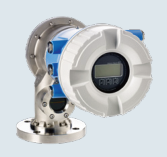
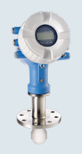

Fast Group Engineering cung cấp Proservo NMS81 đo mức bồn Endress+Hauser chính hãng tại Việt Nam — đầy đủ chứng từ nhập khẩu, CO/CQ và bảo hành chính hãng.



Liên kết nên mở tiếp
Radar tank gauging đo được mức với độ chính xác dưới milimét, nhưng có những phép đo mà chỉ một thiết bị cơ khí tiếp xúc mới làm được đầy đủ: đo interface nhiều lớp (nước đáy bồn dưới lớp dầu), đo mật độ trực tiếp theo cao độ, và đo mức với độ ổn định cơ học tuyệt đối. Proservo NMS81 là thiết bị servo gauging thực hiện chính xác nhóm phép đo này — thả một phao đo (displacer) treo trên dây, điều khiển bằng động cơ servo và cân bằng lực theo nguyên lý Archimedes.
Nguyên lý servo — vì sao đo được nhiều đại lượng
NMS81 dùng một displacer nhỏ treo trên dây đo quấn quanh trống chính xác. Động cơ servo liên tục cân bằng trọng lượng biểu kiến của displacer với lực nâng của chất lỏng. Vì hệ đo trực tiếp lực nổi ở từng cao độ, NMS81 không chỉ đọc mức bề mặt mà còn:
- Đo interface: hạ displacer xuống ranh giới dầu–nước để xác định mức phân lớp.
- Đo mật độ (density profile): dừng displacer ở nhiều cao độ để đo tỷ trọng theo lớp.
- Đo mức đáy/nước tự do: phát hiện lớp nước đáy bồn — thông tin quan trọng để loss control.
Đây là điểm servo vượt trội so với radar: một thiết bị làm được cả hồ sơ phân lớp và mật độ, thứ mà radar không tiếp xúc không đo trực tiếp được.
Thông số kỹ thuật quan trọng (theo tài liệu)
| Hạng mục | Giá trị (theo catalog/TI) |
|---|---|
| Nguyên lý | Servo – tank gauging (cân bằng lực) |
| Dải đo | Đến 47 m |
| Độ chính xác | ±0.4 mm (custody transfer) |
| Nhiệt độ quá trình | -200 đến +200 °C |
| Áp suất quá trình | 0 đến +25 bar |
| Kết nối quá trình | Mặt bích DN80–DN150 / 3–6" |
| Vật liệu tiếp xúc | 316L, Alloy C276, PTFE |
| Tín hiệu / truyền thông | Tank gauging (Modbus/giao thức chuyên dụng) |
| Tính năng | High-pressure version; đo interface & mật độ |
Lưu ý biên tập: dải đo, áp suất và tính hợp lệ custody transfer phụ thuộc phiên bản và chứng nhận đo lường. BẮT BUỘC đối chiếu TI01249G theo mã đặt hàng và xác minh phê duyệt OIML/API cùng quy định Việt Nam.
Dải nhiệt rộng (-200…+200 °C) và bản áp suất cao (tới 25 bar) cho thấy NMS81 phủ được cả bồn LNG/cryo lẫn bồn chịu áp — vùng mà nhiều thiết bị gauging khác không tới.
So với radar NMR81: chọn thế nào
| Tiêu chí | NMS81 (servo) | NMR81 (radar) |
|---|---|---|
| Nguyên lý | Cơ khí tiếp xúc | Không tiếp xúc |
| Đo interface/mật độ | Có (thế mạnh) | Không trực tiếp |
| Bảo trì | Có bộ phận chuyển động | Gần như không |
| Bồn có xáo trộn/bọt | Ổn định (tiếp xúc) | Cần still-pipe |
| Chi phí bảo trì dài hạn | Cao hơn | Thấp hơn |
Nguyên tắc thực tế: cần hồ sơ interface và mật độ (kho dầu thô, bồn phân lớp) → NMS81; chỉ cần mức chính xác cao và muốn bảo trì tối thiểu → NMR81. Nhiều tank farm dùng kết hợp cả hai tùy loại bồn.
Kinh nghiệm lắp đặt & lỗi thường gặp
- Cân chỉnh dây & displacer: độ chính xác phụ thuộc việc hiệu chuẩn khối lượng displacer và độ căng dây — làm đúng quy trình khi commissioning.
- Bảo trì bộ chuyển động: dây và trống là bộ phận cơ khí; lên lịch kiểm tra định kỳ để giữ độ chính xác.
- Chọn vật liệu displacer/dây: theo môi chất (Alloy C276 cho ăn mòn); sai vật liệu gây lệch trọng lượng và sai số.
- Niêm phong đo lường: như mọi thiết bị custody, cấu hình cần được niêm phong sau nghiệm thu.
Ưu điểm, hạn chế, khi nào KHÔNG dùng
Ưu điểm: đo được mức + interface + mật độ trong một thiết bị, độ chính xác ±0.4 mm, dải nhiệt rất rộng, đủ điều kiện custody transfer.
Hạn chế / không phù hợp: có bộ phận chuyển động nên cần bảo trì; chi phí cao. Nếu chỉ cần đo mức thương mại và muốn zero bảo trì cơ khí → radar NMR81. Bồn nhỏ/không thương mại → radar quá trình FMR51 hoặc chênh áp điện tử FMD71.
Hiệu quả kinh tế (TCO)
Với kho dầu thô và bồn cần kiểm soát nước đáy/phân lớp, khả năng đo interface và mật độ của NMS81 giúp giảm tranh chấp giao nhận và tối ưu loss control — giá trị vượt xa chi phí bảo trì cơ khí. Bài toán TCO nên tính trên tổng giá trị hàng hóa và rủi ro sai lệch thương mại, không chỉ trên giá thiết bị.
FastGroup hỗ trợ gì
FastGroup cung cấp thiết bị Endress+Hauser chính hãng tại Việt Nam. Với Proservo NMS81, chúng tôi hỗ trợ: tư vấn chọn giữa servo và radar theo loại bồn, đối chiếu datasheet TI theo mã đặt hàng, xác minh chứng nhận đo lường, hỗ trợ nhập khẩu và cung cấp CO/CQ theo từng đơn hàng, phối hợp commissioning và nghiệm thu đo lường.
Kết luận & liên hệ
Khi cần đo mức, interface và mật độ trong kho bồn xăng dầu với chuẩn đo lường hợp pháp, Proservo NMS81 là giải pháp servo tin cậy. Để chọn cấu hình đúng và nhận báo giá chính hãng, liên hệ FastGroup.
Câu hỏi thường gặp (FAQ)
1. NMS81 đo được những gì? Mức bề mặt, interface (ranh giới dầu–nước), profile mật độ và mức nước đáy bồn.
2. Servo hay radar cho tank farm? Cần interface/mật độ → servo NMS81; chỉ cần mức và ít bảo trì → radar NMR81.
3. Có dùng cho custody transfer không? Có phiên bản đạt chuẩn đo lường; phải kiểm tra TI và chứng nhận theo đơn hàng.
4. Bảo trì có phức tạp không? Có bộ phận chuyển động (dây, displacer) cần kiểm tra định kỳ — đổi lại là khả năng đo đa đại lượng.
5. Có đầy đủ CO/CQ không? FastGroup cung cấp hàng chính hãng kèm CO/CQ và hỗ trợ hồ sơ chứng nhận theo từng đơn hàng.
Nguồn tham khảo
- Endress+Hauser – Level measurement selection (CP00023F00EN2126)
- Endress+Hauser – Technical Information TI01249G Proservo NMS81, endress.com (đối chiếu theo mã đặt hàng và chứng nhận đo lường)
Nhận báo giá Endress+Hauser chính hãng
Gửi mã model, điều kiện quá trình, kết nối và yêu cầu chứng nhận qua email minhduc@fastgroup.vn hoặc Zalo/điện thoại (+84) 938 888 958. Hoặc gửi RFQ qua biểu mẫu và tra mã model trực tiếp trên trang.